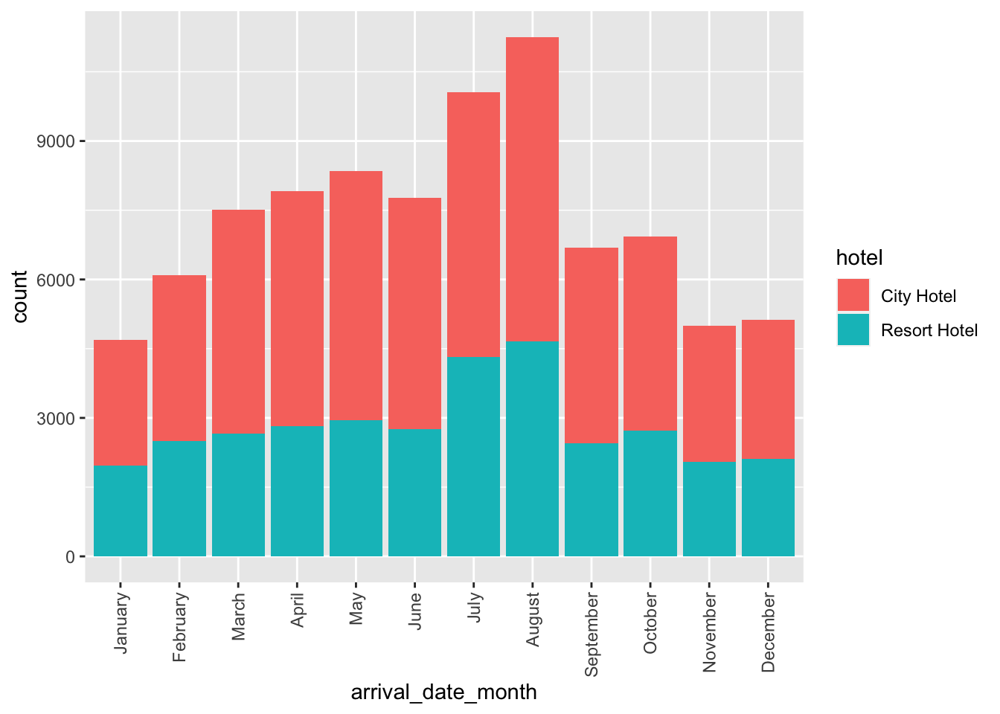
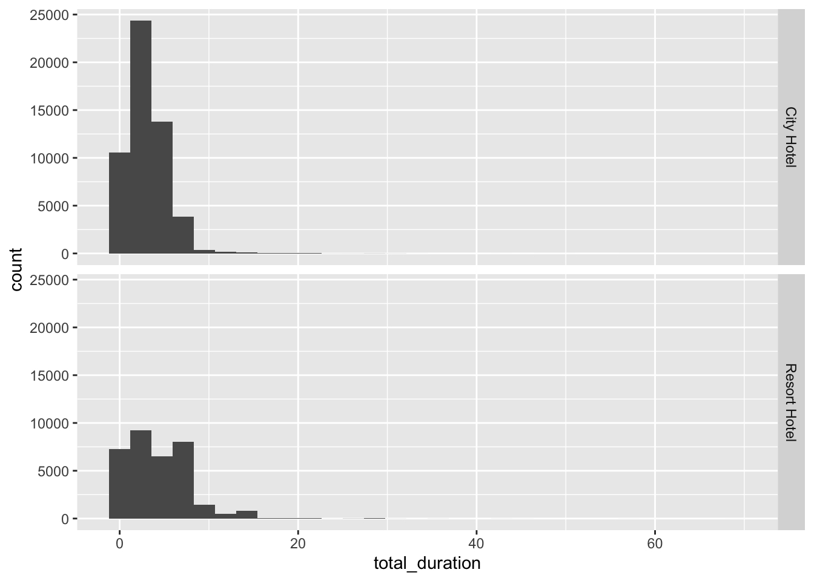

Code
library(tidyverse)
knitr::opts_chunk$set(echo = TRUE)Jocelyn Lutes
June 5, 2023
For this exploration, I will use the hotel bookings dataset, which contains descriptive information for 119390 bookings. There are 32 columns that provide information about each booking, such as the type of hotel, arrival date, stay duration, guest information and stay history, special requests, and reservation type and status. The data spans the years 2015 to 2017.
A sample of the data is shown below.
Before conducting exploratory data analysis (EDA) on the data, we will make sure that the data is cleaned by checking for duplicate rows and missing values.
In the raw dataset, there are 119390 observations. We can use the distinct() command to filter our tibble to rows that are unique across all columns.
This shows that there are 31994 rows that appear more than once. This dataset does not contain an identifier column to know if these bookings occurred as separate transactions, but given that it’s unlikely that a guest would book the exact same stay (dates, too!) more than once, we will remove duplicates from the data. This leaves us with data for 87396 unique bookings.
Next, because features with incomplete data will not be useful for our analysis, we will check our data for missing values. For a quick check, we can sum the number of missing values per column.
hotel is_canceled
0 0
lead_time arrival_date_year
0 0
arrival_date_month arrival_date_week_number
0 0
arrival_date_day_of_month stays_in_weekend_nights
0 0
stays_in_week_nights adults
0 0
children babies
4 0
meal country
0 0
market_segment distribution_channel
0 0
is_repeated_guest previous_cancellations
0 0
previous_bookings_not_canceled reserved_room_type
0 0
assigned_room_type booking_changes
0 0
deposit_type agent
0 0
company days_in_waiting_list
0 0
customer_type adr
0 0
required_car_parking_spaces total_of_special_requests
0 0
reservation_status reservation_status_date
0 0 Here, we see that the data only contains 4 missing values in the children column and is thus mostly complete!
For our exploratory analysis, I will focus on exploring the differences between City and Resort hotels. This type of analysis could be useful if a hotel chain was trying to decide whether to construct a new hotel in the city or to construct a new resort.
In general, within our data, we can see that city hotels are booked almost twice as many times as resort hotels.
We can also explore if there are any seasonal trends that differ based on the type of hotel that is booked.
months <- c('January', 'February', 'March', 'April', 'May', 'June', 'July', 'August', 'September', 'October', 'November', 'December')
df_clean %>%
mutate(arrival_date_month = factor(arrival_date_month, ordered=TRUE, levels = months)) %>%
ggplot(aes(x=arrival_date_month, fill=hotel)) +
geom_bar() +
# https://stackoverflow.com/questions/1330989/rotating-and-spacing-axis-labels-in-ggplot2
theme(axis.text.x = element_text(angle = 90, vjust = 0.5, hjust=1))
From the bar plot above, we can see once again that city hotels have more bookings than resort hotels. In general, both city and resort hotels experience the largest number of bookings in the summer months of July and August and the lowest number of bookings in the winter months (November, December, and January). One interesting finding is that, with the exception of July and August, the number of bookings for resort hotels is pretty stable across all months, whereas, there appears to a more pronounced build-up to the summer “rush” for city hotels, as evidenced by the trend in increased bookings from February to July. This could maybe correspond with spring break and summer vacation travel. It would also be interesting to know how external factors, such as conferences and other events, impact frequency of bookings for city vs. resort hotels.
We can also investigate if there are any differences in trip duration for bookings made at city vs. resort hotels.
From the above table, we can see total stay duration (weeknights + weekends) appears similar between city and resort hotels, but guests tend to stay at resorts for one day longer. Because the medians for total duration appear to be slightly less than the mean, this suggests that we might have a right skew to our data, which is also shown in the histograms below.
`stat_bin()` using `bins = 30`. Pick better value with `binwidth`.
Another interesting finding from this analysis is that the minimum stay duration for both city and resort hotels is 0 days. Initially, I thought that this might correspond to canceled bookings, but because many of the 0-day duration stays have a is_canceled == 0, this does not seem to be the case. Before using this data for predictive modeling, we would want to make sure that we understand what 0 means in terms of the trip duration.
We can also explore if the composition of guests (i.e., adults, children, and babies) differs by the type of hotel.
Mean
Median
By looking at the measures of central tendency, it is surprising to see that both city and resort hotels generally have group sizes that are composed of two adults.
If we look at the range of the data, however, more interesting insights can be gleaned.
Range
From this analysis, we can see that the largest booking at city hotels is much smaller than the largest booking at resorts. This probably makes sense due to the space of hotels in the city vs. a resort. If a developer were planning a new hotel, this could be useful information for thinking about what type of group demographic a hotel chain would want to attract.
Because cancellations could lead to less profit for a hotel, we can also explore if cancellations are more frequent at city vs. resort hotels. Because is_canceled is a binary variable, we can view the proportion of cancellations by hotel type just by taking the mean of the is_canceled variable!
From this analysis, we can see that approximately 30% of bookings made at city hotels are canceled compared to 23.5% of bookings at resort hotels.
Finally, in the hotel industry loyalty to a hotel is important. Therefore, we can explore if there are any differences in the proportion of bookings that are repeated stays between city and resort hotels.
From this analysis, we can see that the bookings in this dataset were predominantly first-time stays. However, it is interesting to see that resort hotels have a slightly higher proportion of repeat guests. It would be interesting to know which external factors, such as hotel competition, influence the decision to repeat a stay at a hotel.
From this analysis, we found that:
The hotel bookings dataset contains more bookings for city hotels than resort hotels.
For both city and resort hotels, the peak booking months are July and August, likely corresponding with summer vacations. For resort hotels, bookings remain fairly stable in the other months, but city hotels experience a lull in winter (November - January) and begin to see increasing bookings in February.
In general, the average and median stay for both city and hotel bookings are less than one week, but the total stay for resort hotels is ~1 day longer than city hotels.
Overall, most hotel bookings are for two adults. The largest city hotel booking is much smaller than the largest resort hotel booking.
There appears to be slightly more cancellations that happen at city hotels, and resort hotels appear to have slightly higher customer loyalty, as measured by the proportion of repeat customers.
---
title: "Challenge 2: Exploration of Hotel Bookings"
author: "Jocelyn Lutes"
description: "Exploratory analysis of the hotel bookings dataset"
date: "06/05/2023"
format:
html:
df-print: paged
toc: true
code-fold: true
code-copy: true
code-tools: true
categories:
- challenge2
- jocelyn_lutes
- hotel_bookings
- tidyverse
- ggplot2
---
```{r}
#| label: setup
#| warning: false
library(tidyverse)
knitr::opts_chunk$set(echo = TRUE)
```
## Import Data
```{r message=FALSE}
df <- read_csv('_data/hotel_bookings.csv')
n_obs <- nrow(df)
n_features <- ncol(df)
```
For this exploration, I will use the [hotel bookings dataset](https://www.kaggle.com/datasets/jessemostipak/hotel-booking-demand), which contains descriptive information for `r n_obs` bookings. There are `r n_features` columns that provide information about each booking, such as the type of hotel, arrival date, stay duration, guest information and stay history, special requests, and reservation type and status. The data spans the years `r min(df$arrival_date_year)` to `r max(df$arrival_date_year)`.
A sample of the data is shown below.
```{r}
head(df)
```
## Data Cleaning
Before conducting exploratory data analysis (EDA) on the data, we will make sure that the data is cleaned by checking for duplicate rows and missing values.
### Duplicate Rows
```{r message=FALSE}
df_clean <- df %>% distinct()
n_distinct_obs <- nrow(df_clean)
```
In the raw dataset, there are `r n_obs` observations. We can use the `distinct()` command to filter our tibble to rows that are unique across all columns.
This shows that there are `r n_obs - n_distinct_obs` rows that appear more than once. This dataset does not contain an identifier column to know if these bookings occurred as separate transactions, but given that it's unlikely that a guest would book the exact same stay (dates, too!) more than once, we will remove duplicates from the data. This leaves us with data for `r n_distinct_obs` unique bookings.
### Missing Data
Next, because features with incomplete data will not be useful for our analysis, we will check our data for missing values. For a quick check, we can sum the number of missing values per column.
```{r}
# https://stackoverflow.com/questions/8317231/elegant-way-to-report-missing-values-in-a-data-frame
sapply(df, function(x) sum(is.na(x)))
```
Here, we see that the data only contains 4 missing values in the `children` column and is thus mostly complete!
## Exploratory Data Analysis
### How do reservations for city vs. resort hotels differ?
For our exploratory analysis, I will focus on exploring the differences between `City` and `Resort` hotels. This type of analysis could be useful if a hotel chain was trying to decide whether to construct a new hotel in the city or to construct a new resort.
#### Frequency of Booking
``` {r}
df %>% group_by(hotel) %>% tally()
```
In general, within our data, we can see that city hotels are booked almost twice as many times as resort hotels.
#### Date of Stay (Month)
We can also explore if there are any seasonal trends that differ based on the type of hotel that is booked.
```{r}
months <- c('January', 'February', 'March', 'April', 'May', 'June', 'July', 'August', 'September', 'October', 'November', 'December')
df_clean %>%
mutate(arrival_date_month = factor(arrival_date_month, ordered=TRUE, levels = months)) %>%
ggplot(aes(x=arrival_date_month, fill=hotel)) +
geom_bar() +
# https://stackoverflow.com/questions/1330989/rotating-and-spacing-axis-labels-in-ggplot2
theme(axis.text.x = element_text(angle = 90, vjust = 0.5, hjust=1))
# Note: For this, I wanted to normalize the y-axis to have proportions instead of counts, but I was not able to figure out how to transform the data
```
From the bar plot above, we can see once again that city hotels have more bookings than resort hotels. In general, both city and resort hotels experience the largest number of bookings in the summer months of July and August and the lowest number of bookings in the winter months (November, December, and January). One interesting finding is that, with the exception of July and August, the number of bookings for resort hotels is pretty stable across all months, whereas, there appears to a more pronounced build-up to the summer "rush" for city hotels, as evidenced by the trend in increased bookings from February to July. This could maybe correspond with spring break and summer vacation travel. It would also be interesting to know how external factors, such as conferences and other events, impact frequency of bookings for city vs. resort hotels.
#### Length of Stay (Total Duration)
We can also investigate if there are any differences in trip duration for bookings made at city vs. resort hotels.
```{r}
df_clean %>%
mutate(total_duration = stays_in_week_nights + stays_in_weekend_nights) %>%
group_by(hotel) %>%
summarize(count = n(), min = min(total_duration), max = max(total_duration), mean = mean(total_duration), sd = sd(total_duration), median = median(total_duration))
```
From the above table, we can see total stay duration (weeknights + weekends) appears similar between city and resort hotels, but guests tend to stay at resorts for one day longer. Because the medians for total duration appear to be slightly less than the mean, this suggests that we might have a right skew to our data, which is also shown in the histograms below.
```{r}
df_clean %>%
mutate(total_duration = stays_in_week_nights + stays_in_weekend_nights) %>%
ggplot(aes(x=total_duration)) +
geom_histogram() +
facet_grid(rows=vars(hotel))
```
Another interesting finding from this analysis is that the minimum stay duration for both city and resort hotels is 0 days. Initially, I thought that this might correspond to canceled bookings, but because many of the 0-day duration stays have a `is_canceled == 0`, this does not seem to be the case. Before using this data for predictive modeling, we would want to make sure that we understand what `0` means in terms of the trip duration.
```{r}
df_clean %>%
mutate(total_duration = stays_in_week_nights + stays_in_weekend_nights) %>%
filter(total_duration == 0) %>%
group_by(total_duration, is_canceled) %>%
summarize(count = n())
```
#### Guest Composition
We can also explore if the composition of guests (i.e., adults, children, and babies) differs by the type of hotel.
**Mean**
``` {r}
df_clean %>%
group_by(hotel) %>%
summarize(count = n(), mean_adults = mean(adults), sd_adults = sd(adults), mean_children = mean(children, na.rm=T), sd_children = sd(children, na.rm=T), mean_babies = mean(babies), sd_babies = sd(babies))
```
**Median**
``` {r}
df_clean %>%
group_by(hotel) %>%
summarize(count = n(), med_adults = median(adults), med_children = median(children, na.rm=T), med_babies = median(babies))
```
By looking at the measures of central tendency, it is surprising to see that both city and resort hotels generally have group sizes that are composed of two adults.
If we look at the range of the data, however, more interesting insights can be gleaned.
**Range**
``` {r}
df_clean %>%
group_by(hotel) %>%
summarize(count = n(), min_adults = min(adults), max_adults = max(adults), min_children = min(children, na.rm=T), max_children = max(children, na.rm=T), min_babies = min(babies), max_babies = max(babies))
```
From this analysis, we can see that the largest booking at city hotels is much smaller than the largest booking at resorts. This probably makes sense due to the space of hotels in the city vs. a resort. If a developer were planning a new hotel, this could be useful information for thinking about what type of group demographic a hotel chain would want to attract.
#### Cancellations
Because cancellations could lead to less profit for a hotel, we can also explore if cancellations are more frequent at city vs. resort hotels. Because `is_canceled` is a binary variable, we can view the proportion of cancellations by hotel type just by taking the mean of the `is_canceled` variable!
```{r}
df_clean %>%
group_by(hotel) %>%
summarize(n = n(), prop_canceled = mean(is_canceled))
```
From this analysis, we can see that approximately 30% of bookings made at city hotels are canceled compared to 23.5% of bookings at resort hotels.
#### Repeated Stays
Finally, in the hotel industry loyalty to a hotel is important. Therefore, we can explore if there are any differences in the proportion of bookings that are repeated stays between city and resort hotels.
```{r}
df_clean %>%
group_by(hotel) %>%
summarize(n = n(), prop_repeated = mean(is_repeated_guest))
```
From this analysis, we can see that the bookings in this dataset were predominantly first-time stays. However, it is interesting to see that resort hotels have a slightly higher proportion of repeat guests. It would be interesting to know which external factors, such as hotel competition, influence the decision to repeat a stay at a hotel.
## Conclusion
From this analysis, we found that:
- The `hotel bookings` dataset contains more bookings for city hotels than resort hotels.
- For both city and resort hotels, the peak booking months are July and August, likely corresponding with summer vacations. For resort hotels, bookings remain fairly stable in the other months, but city hotels experience a lull in winter (November - January) and begin to see increasing bookings in February.
- In general, the average and median stay for both city and hotel bookings are less than one week, but the total stay for resort hotels is ~1 day longer than city hotels.
- Overall, most hotel bookings are for two adults. The largest city hotel booking is much smaller than the largest resort hotel booking.
- There appears to be slightly more cancellations that happen at city hotels, and resort hotels appear to have slightly higher customer loyalty, as measured by the proportion of repeat customers.